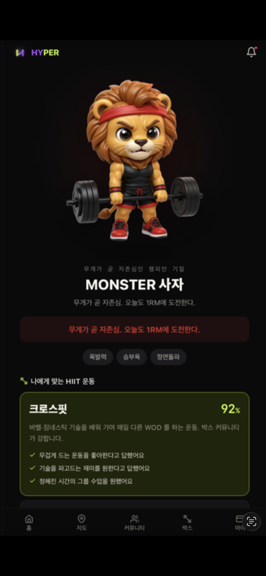
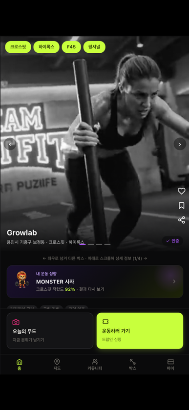
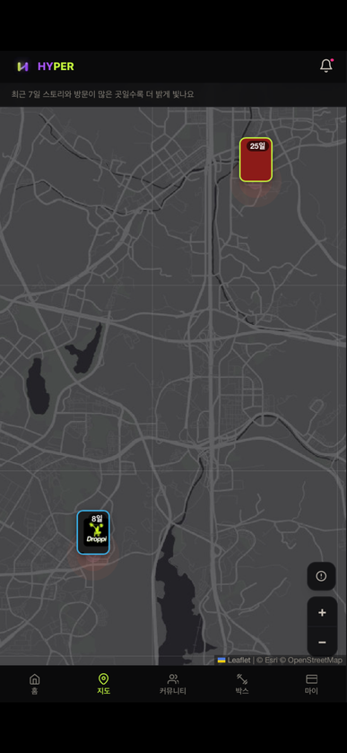
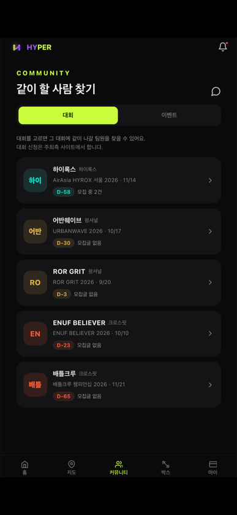
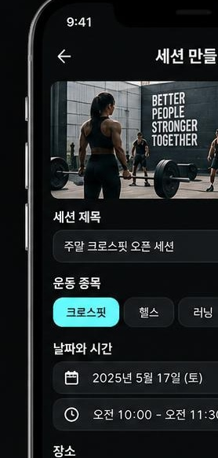
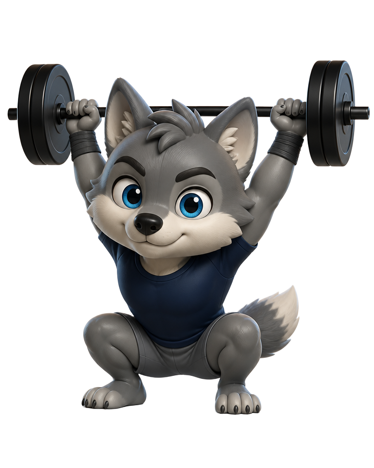
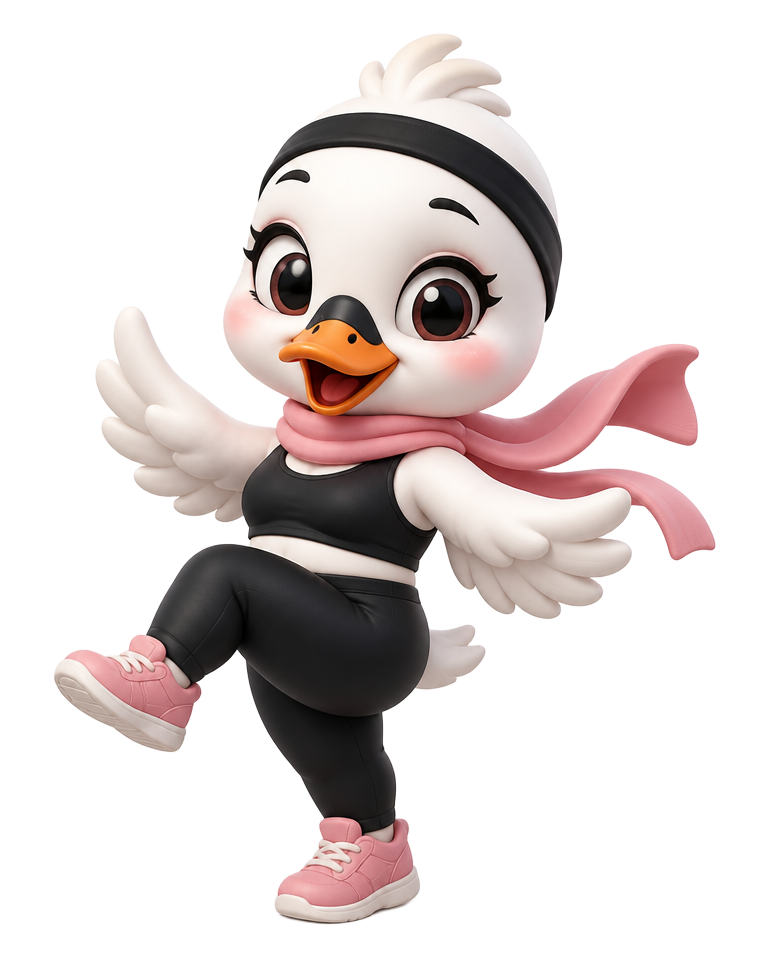
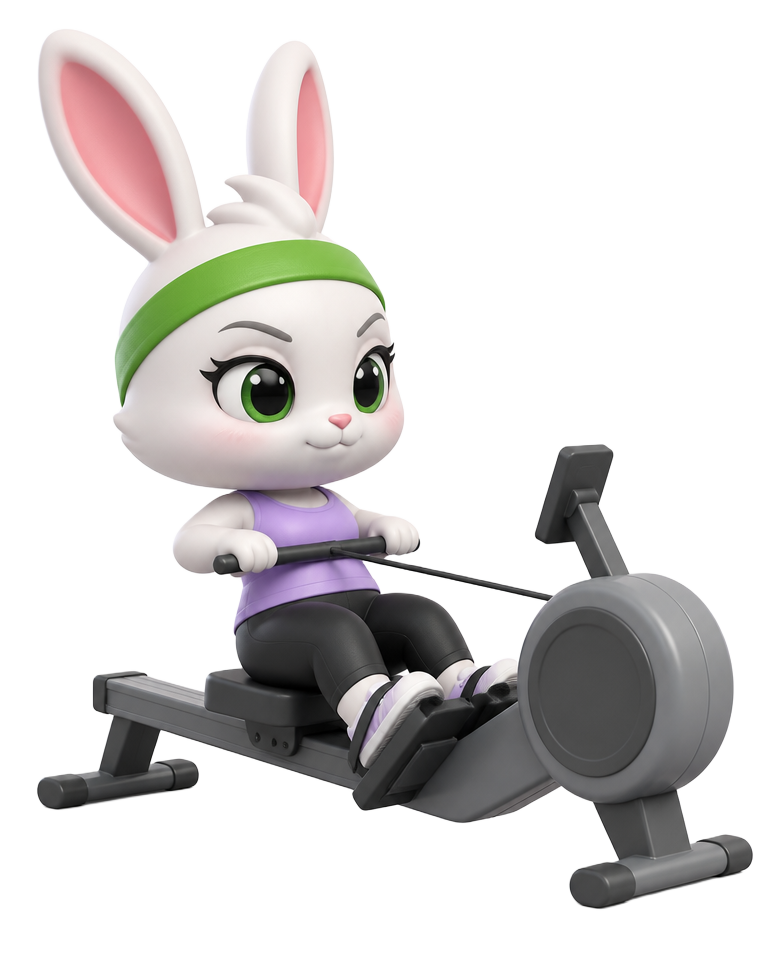
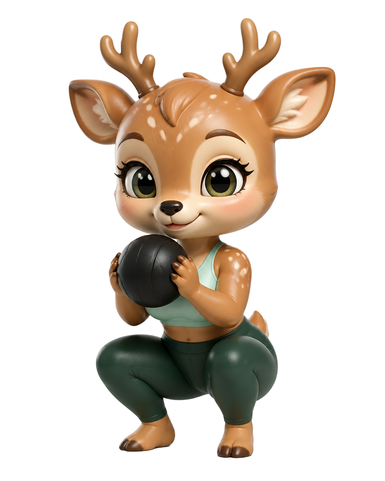

01TEST
운동 성향 테스트 하기
몇 가지 질문으로 내 운동 성향과 캐릭터를 확인해요.

[ HYBRID FITNESS DROP-IN ]
45초 성향테스트로 나와 맞는 곳을 찾고, 부담 없이 직접 경험해 보세요.
[ WHAT HYPER OFFERS ]
성향 테스트부터 체육관 매칭, 커뮤니티까지 — HYPER를 한 흐름으로 보여드립니다.
몇 가지 질문으로 내 운동 성향과 캐릭터를 확인해요.

성향 결과로 나와 어울리는 박스를 만나요.

최근 7일의 스토리와 방문이 많은 곳이 밝게 빛나요.

대회를 고르고 함께할 팀원과 커뮤니티를 만나요.

종목·장소·시간을 정해 이벤트와 세션을 직접 열어요.

센터 운영 기능은 파트너 센터 전용으로 제공됩니다.
[ TYPE MATCHING ]
설명보다 캐릭터 하나가 나를 더 정확히 말해줄지도 몰라요.




[ HOW TO USE ]
센터 승인 후 첫 드랍인 1회를 무료로 이용해요.
체험 후 후기를 작성하면 무료 드랍인 1회를 추가로 받아요.
마음에 든 센터와 프로그램을 내 방식대로 계속 이용해요.